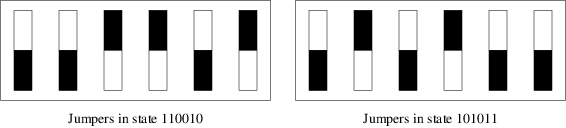

You can define macros in pic, with up to 32 arguments (up to 16 on EBCDIC platforms). This is useful for diagrams with repetitive parts. In conjunction with the scope rules for block composites, it effectively gives you the ability to write functions.
The syntax is
define name { replacement text }
This defines name as a macro to be replaced by the replacement text (not including the braces). The macro may be called as
name(arg1, arg2, ... argn)
The arguments (if any) are substituted for tokens $1, $2 ... $n appearing in the replacement text.
As an example of macro use, consider this:
.PS
# Plot a single jumper in a box, $1 is the on-off state.
define jumper { [
shrinkfactor = 0.8;
Outer: box invis wid 0.45 ht 1;
# Count on end ] to reset these
boxwid = Outer.wid * shrinkfactor / 2;
boxht = Outer.ht * shrinkfactor / 2;
box fill (!$1) with .s at center of Outer;
box fill ($1) with .n at center of Outer;
] }
# Plot a block of six jumpers.
define jumperblock {
jumper($1);
jumper($2);
jumper($3);
jumper($4);
jumper($5);
jumper($6);
jwidth = last [].Outer.wid;
jheight = last [].Outer.ht;
box with .nw at 6th last [].nw wid 6*jwidth ht jheight;
# Use {} to avoid changing position from last box draw.
# This is necessary so move in any direction works as expected
{"Jumpers in state $1$2$3$4$5$6" at last box .s + (0,-0.2);}
}
# Sample macro invocations.
jumperblock(1,1,0,0,1,0);
move;
jumperblock(1,0,1,0,1,1);
.PE
It yields the following:

Figure 14-1: Sample use of a macro
This macro example illustrates how you can combine [], brace grouping, and variable assignment to write true functions.
One detail the example above does not illustrate is the fact that macro argument parsing is not token-oriented. If you call jumper( 1 ), the value of $1 is " 1 ". You could even call jumper(big string) to give $1 the value "big string".
If you want to pass in a coordinate pair, you can avoid getting tripped up by the comma by wrapping the pair in parentheses.
Macros persist through pictures. To undefine a macro, say undef name; for example,
undef jumper undef jumperblock
would undefine the two macros in the jumper block example.